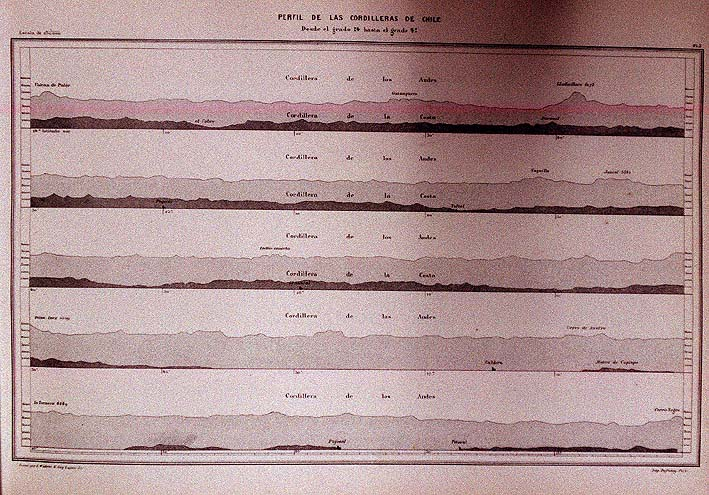

|
|  |
|
Aimé Pissis, Perfil de las cordilleras de Chile
|
Museums, geographical and botanical societies, and increasingly also universities, situated mostly in the capitals Rio de Janeiro, Buenos Aires, and Santiago, were the destination of this flow of data from the peripheries of national space towards what was thus turned into the centre. The French historian of science Bruno Latour calls these sites of accumulation of data culled from nature and turned into abstract and comparable figures and charts 'centres of calculation': places endowed with the technical instruments and infrastructure (libraries, machines and apparatuses of measurement, etc.), institutional authority and financial and political backing that allows them to construct 'facts'. In this sense museums and academic institutions in nineteenth-century Latin America had a crucial political dimension, namely, to promote the transformation of the national capitals into local centres of calculation, rather than merely points of transmission of data to the great overseas institutions of Paris, London, Berlin, etc., on whose material, bibliographical, and often human resources they nevertheless critically depended.
|